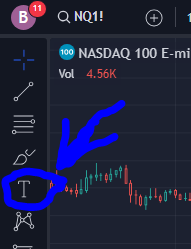

Separator
Anchored notes can be used as a separator between different sections of the object tree.
Anchored notes are here. Long left click or click on the edge to bring up popup menu.

Set label occupancy to 0%
Set background to 100%
Border is optional.
Place separator notes in the lower left corner so it's out of the way.
Create a template and call it Separator.
SeparatorPlaceholder
Anchored notes can be used as a placeholder to prevent tradingview from deleting empty folders. This will help you keep the folders organized when nothing is currently in it.
You can find anchored notes here.
Set label occupancy to 0%
Set background to somewhere between 30% to 100% depending on your preference.
Border is 0% or no border.
Place placeholder notes in the lower left corner so it's out of the way.
Create a template and call it Placeholder.
Placeholder